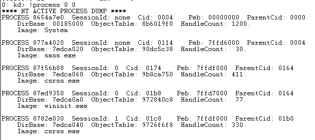
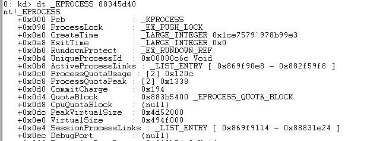
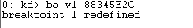

DebugPort清0
ring0下 _EPROCESS 结构记录了进程相关信息
_EPROCESS 下 DebugPort记录了相关调试信息 将此设置为0 便可使程序无法被调试
anti-anti
1
windbg中执行 !process 0 0 获取进程PEPROCESS

2
windbg中执行 dt _EPROCESS PEPROCESS 查看进程_EPROCESS信息 主要寻找DebugPort偏移

3
windbg中执行 ba w1 PEPROCESS+DebugPort偏移 对DebugPort下写入断点

4
windbg中执行 g 断在DebugPort清0处
TP
TP 註冊了一個 DPC 定時器 一個內核線程A 另一個內核線程B (A 相對 B 在較低地址)
線程B 不斷 Debug_Port 清0(代碼B中 也校驗了 B中 關鍵代碼)
線程A 校驗線程B 代碼是否被hook (可能是 關鍵代碼處 CRC)
DPC定時器 檢查線程A 是否正常
(線程A還在校驗DPC定時器)
anti-anti
先 hook 廢掉 DPC
再 hook 廢掉 線程A
hook 廢掉線程 B中的代碼校驗
最後 hook 廢掉線程 B中的 Debug_Port 清0